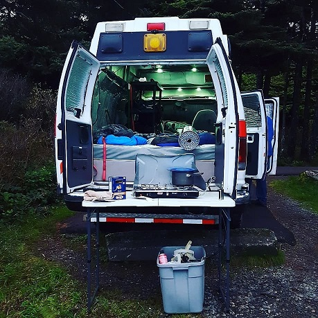

I have spent nearly six year camping with my husband and while I definitely don't consider myself an expert, I have picked
up quite a few tips and tricks along the way. Everyone has a different idea about what is an essential item for camping. Below are
some lists that I have determined to be essential items for myself but are probably pretty standard for most people. If you plan to
hike on your trip you should also take a look at the Washington Trail Association's 10 essential items you should always carry in your
pack.
Washington Trail Association 10 Essentials
Gear Essentials
Folding table
Headlamps
Batteries
Map books (remember: phone service isn't available everywhere!)
Games/entertainment
Water
Bear spray
First aid kit
Bag for dirty laundry
Hand sanitizer
Pillows
Blankets
Sleeping bags (make sure to have a high quality sleeping bag rated for low temperatures, it makes
all the difference!)
Sunscreen
Sunglasses
Phone charger
Camp Kitchen
I personally prefer to use items that are reusable. Plates, cups, forks, ect... it means less trash and if you spend a lot of time
camping, like we do, it saves you money in the long run not having to buy those items for every trip.
Propane (with necessary attatchments)
Plates
Bowls
Cups/mugs
Stove
Garbage bags
Clorox wipes
Cooking utensils and cutlery
Paper towels/dish towels
cooking spray
Food seasonings
camp toaster (It sits on top of your propane stove burner
Collapsible wash basin

Personal Packing
Something that I have had to do a lot of experimenting with is how many personal items to pack. I am talking about clothes,
toiletries, ect... It's typically pretty easy to pack for a couple of days but gets more challenging once you plan to be gone
for 10 days or so. Something that I have learned is less is more when it comes to packing clothes. We do a lot of backcountry
camping so facilities (water, toilet, clothes washing) are not available so it's unlikely you will be taking a shower every day.
On a 10 day trip we shower, and I use that term loosely, four or five times. A shower could be anything from a coin operated shower
at a campground to pulling over on the side of the road to take a bath in a lake. So packing clean clothes for every day just takes
up space. On a 10 day road trip a lot of the time is usually spent driving which means you aren't getting sweaty or dirty so you can
wear the same clothes for a couple days. Below I have listed out the personal items I would recommend for a 10 day trip in the summer
time.
Toilet paper
Small makeup bag for soap/shampoo/quarters
Towel (I pack two per person. One for showers one for swimming)
Small bag with toothbrush/toothpaste/nail clippers/glasses/whatever you need
5 shirts
One long sleeve shirt
One pair of heavy long pants for cold night
Two pairs of shorts
One pair of hiking pants
Sweatshirt/jacket
5 pairs of socks/underwear (if you plan on being more active bring a couple extra)